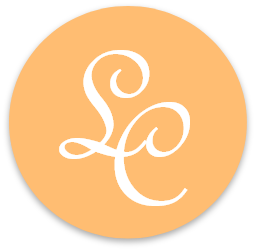

Un espacio para reencontrarse con tu ser interior

Servicios
Palabra en sanscrito que significa unión, esta práctica milenaria tiene como objetivo la comunión o unión
del cuerpo, la mente y las emociones a través de su práctica, que consiste en asanas o posturas,
ejercicios de pranayama o de respiración, mantras y la meditación.
En Los Colihues, el yoga que se imparte es Integral, el mismo se practica de acuerdo a la adaptación
del mismo con el practicante, y de acuerdo a sus limitaciones y nivel de practica que este posea.
La consigna es “el yoga debe adaptarse al practicante, y no viceversa”.
No hay limites de edad , ni física o mental, que lo prohíba, en caso de ser así, es el medico que lo decide.
Las clases son de una (1) hora, dos veces por semana, el dojo posee los elementos necesarios para la
práctica, por lo que no es necesario llevar mat o manta para la relajación, la calefacción es por losa
radiante, la temperatura es siempre agradable, en cualquier época del año.
¿Hay límites para la práctica del yoga?
Si claro, como cualquier otra practica física en el yoga hay límites, en caso de estar embarazada, con
algún tipo de dolencia, traumatismo, enfermedad o dolor, es importante dejar constancia de ello en la
entrevista y en la ficha de ingreso, además de solicitar al medico de cabecera la autorización para llevar
adelante la practica de ser así posible.
Bajo ninguna circunstancia deberá practicarse sin contar con la autorización médica.
La palabra Reiki se deriva de Rei: universo y Ki: energía: lo que se traduce en “energía universal
o vital”.
Es un sistema de sanación holística, no tradicional, no se aconseja en ningún caso interrumpir
tratamiento medico o no concurrir al mismo en caso de enfermedad.
Energía que permite ser transmitida a través de las manos por un/a facilitador o maestra/o Reiki,
iniciado en la práctica por un maestro/a, esta energía es canalizada y transmitida al receptor a través de
las palmas de las manos, con el propósito de que el mismo alcance un equilibrio a nivel físico, mental y
emocional, actuando de forma inmediata o acumulativa, según el caso.
Tratamiento Reiki: consiste en cuatro sesiones, las cuales tienen como finalidad el equilibrio y la
armonización de los centros energéticos, denominados chakras y respectivos cuerpos áuricos.
Para ello en caso de ser necesario el tratamiento suelo hacer uso de elementos accesorios como
péndulos, piedras de cuarzo, amatista, turmalina, otras, aromaterapia, sahumerios y cuencos tibetanos.
Las sesiones pueden facilitarse en días consecutivos o de acuerdo a la necesidad y demanda del
solicitante, cada dos o tres días, semanal, etc. La duración de la sesión es de aproximadamente una (1)
hora.
Iniciaciones Reiki:
Las mismas son facilitadas por mí, en mi carácter de Maestra en Reiki Usui y Karuna Reiki.
Los niveles de Iniciación son: Nivel l, Nivel ll, Nivel lll y Maestría.
Karuna: significa compasión, lo cual otorga a quien lo recibe la energía universal con el propósito
de ayudar a sanar las emociones desde la compasión.
La descripción del tratamiento corresponde al anterior, la sesión transcurre aproximadamente
en una hora de duración, los elementos que pueden utilizarse no varían en diversidad.
La característica principal del Reiki Karuna es que este tipo de Reiki que se canaliza,
tiene como finalidad aliviar el sufrimiento espiritual y emocional, a través del amor, la paz y la armonía,
por situaciones de stress extremas, traumas, por abuso de violencia, etc.
Sandra Duran Master Reiki Usui y Karuna Reiki, 8° linaje.
El tarot es un tipo de mancia, su consulta tiene como destino facilitar respuestas a
cuestiones de índole urgentes o apremiantes para el consultante.
Las respuestas a las consultas a las barajas del tarot deberán ser recepcionadas como sugerencias,
sobre aquello de lo que se consulta, y nunca como una verdad absoluta, ya que su lectura va a
depender de los acontecimientos pasados, presentes y futuros próximos de no mas de 6 (seis) meses,
que es el tiempo recomendable pararepetir la consulta.
Carl Jung (psiquiatra, psicoanalista. 1875-1961. Suiza)
“El arquetipo es una tendencia a formar tales representaciones de un motivo –representaciones que
pueden variar mucho en el detalle sin perder un patrón básico… Son de hecho una tendencia instintiva
(...) Es esencial insistir que no son meros conceptos filosóficos. Son pedazos de la vida misma
–imágenes que están integralmente conectadas al individuo a través del puente de las emociones- «No
se trata, pues, de representaciones heredadas, sino de posibilidades heredadas de representaciones.
Tampoco son herencias individuales, si no, en lo esencial, generales, como se puede comprobar por
serlos arquetipos un fenómeno universal».
Alejandro Jodorowsky (escritor-cineasta. Chileno.1929)
'El Tarot es el libro más importante de la cultura occidental'.
Cuencos Tibetanos, mística sanadora de la vibración y el sonido.
Se desconoce hasta el momento el origen y propósito primordial en que los cuencos
tibetanos tuvieron aparición en el Himalaya. Se dice que pudo haber sido entre el 2500 a.C
y 200 d.C, en la era de Bronce de la antigua China, momento en que se registran los
primeros vestigios de fundición en la metalurgia, el pueblo chino creía que estos elementos
sonoros poseían algún tipo de espíritu mágico, por lo que eran utilizados en rituales y
ceremonias religiosas.
En los países budistas el cuenco representa el camino medio entre el que da, y el que
recibe, el punto en el que ambos están unidos en un mismo acto.
En Los Colihues la utilización del cuenco tibetano tiene como propósito otorgar serenidad,
calma, relajación y armonía, a través de la vibración del sonido, tanto a nivel físico, mental y
espiritual.
Facilitadora:
Sandra Duran
La Reeducación Grafica se fundamenta en los reflejos de repetición de
Pávlov, basados en la neuroplasticidad neuronal, el nuevo reflejo
condicionado se fortalece y las redes viejas se debilitan.
En niños a partir de los 5 (cinco) años se puede comenzar a trabajar la
motricidad fina, y las disgrafias en los niños a partir de los 7 (años).
Conceptos Estructurales que rigen la maduración Neurológica:
Fundamentos de la reeducación gráfica, “lo motor participa lo intelectual
en la psicomotricidad” (Ernest Dupré).
La reeducación contribuye a estimular en los adultos mayores, los
neurotransmisores, serotonina, dopamina, además de convocarlos a
socializar.
La Reeducación se lleva a cabo a partir de la instrumentación de técnicas
de relajación, pictográficas y escriptograficas.
Reserva tu turno para disfrutar una vida mas plena